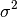

Robust Geometric Positioning Algorithm presented in
from pylayers.location.geometric.constraints.cla import *
from pylayers.location.geometric.constraints.toa import *
from pylayers.location.geometric.constraints.tdoa import *
from pylayers.location.geometric.constraints.rss import *
import matplotlib.pyplot as plt
ptoa1=np.array(([0,0]))
ptoa2=np.array(([10,15]))
ptoa3=np.array(([5,28]))
ptoa4=np.array(([-10,-10]))
p = np.array((0,5))
Display the scene
f=plt.figure()
ax=f.add_subplot(111)
ax.plot(ptoa1[0],ptoa1[1],'or',label='anchor 1')
ax.plot(ptoa2[0],ptoa2[1],'or',label='anchor 2')
ax.plot(ptoa3[0],ptoa3[1],'or',label='anchor 3')
ax.plot(ptoa4[0],ptoa4[1],'or',label='anchor 4')
ax.plot(p[0],p[1],'xb',label='p')
ax.legend(loc='best')
<matplotlib.legend.Legend at 0x104caa210>

compute the true distance and the associated TOAs
d1=np.sqrt(np.sum((ptoa1-p)**2))
d2=np.sqrt(np.sum((ptoa2-p)**2))
d3=np.sqrt(np.sum((ptoa3-p)**2))
d4=np.sqrt(np.sum((ptoa4-p)**2))
toa1=d1/0.3
toa2=d2/0.3
toa3=d3/0.3
toa4=d4/0.3
print 'distance p-1=',d1, '/ toa1=',toa1
print 'distance p-2=',d2, '/ toa2=',toa2
print 'distance p-3=',d3, '/ toa3=',toa3
print 'distance p-4=',d4, '/ toa3=',toa4
distance p-1= 5.0 / toa1= 16.6666666667
distance p-2= 14.1421356237 / toa2= 47.1404520791
distance p-3= 23.5372045919 / toa3= 78.4573486396
distance p-4= 18.0277563773 / toa3= 60.0925212577
RGPA¶
TOA¶
instanciate the constraint layer array which gathers all the geometric constraints of the considered scenario.
C=CLA()
Instanciate TOA objects Watch out their id are differnts
T1=TOA(id=0,value = toa1, std = 1.0, p = ptoa1)
T2=TOA(id=1,value = toa2, std = 1.0, p = ptoa2)
T3=TOA(id=2,value = toa3, std = 1.0, p = ptoa3)
T4=TOA(id=3,value = toa4, std = 1.0, p = ptoa4)
Add TOA contrstraints to the CLA
C.append(T1)
C.append(T2)
C.append(T3)
C.append(T4)
List all constraints of the CLA
C.c
[<pylayers.location.geometric.constraints.toa.TOA at 0x104c408d0>,
<pylayers.location.geometric.constraints.toa.TOA at 0x104c38d50>,
<pylayers.location.geometric.constraints.toa.TOA at 0x104c38e50>,
<pylayers.location.geometric.constraints.toa.TOA at 0x104c40bd0>]
Get information on the cla :
- type : TOA / RSS
- p : Position of the origin of the constraint
- value : power ( RSS ) / time in ns ( TOA)
- std : standard deviation  of value
- runable : does the constraint has a position p ?
- obsolete : does the value has been obtained recently ?
- usuable : runbale AND NOT obsolete
- evlauated : obsolete
C.info2()
type , p , value , std , runable, usable, obsolete, evaluated
TOA , [0 0] , 16.6666666667, 1.0, 0, 1, 0, 0
type , p , value , std , runable, usable, obsolete, evaluated
TOA , [10 15] , 47.1404520791, 1.0, 1, 1, 0, 0
type , p , value , std , runable, usable, obsolete, evaluated
TOA , [ 5 28] , 78.4573486396, 1.0, 1, 1, 0, 0
type , p , value , std , runable, usable, obsolete, evaluated
TOA , [-10 -10] , 60.0925212577, 1.0, 1, 1, 0, 0
Update the CLA
C.update()
Compute the cla
C.compute()
0.25 1.5
0.0625 1.375
0.015625 1.34375
True
show the estimated position
C.pe
array([ -4.735e-03, 4.992e+00])
TDOA¶
Td1=TDOA(id=0,value = toa1-toa2, std = 1.0, p = np.array([ptoa1,ptoa2]))
Td2=TDOA(id=1,value = toa1-toa3, std = 1.0, p = np.array([ptoa1,ptoa3]))
Td3=TDOA(id=2,value = toa1-toa4, std = 1.0, p = np.array([ptoa1,ptoa4]))
C=CLA()
C.append(Td1)
C.append(Td2)
C.append(Td3)
C.compute()
TDOA 2.0
TDOA 2.0
TDOA 2.0
0.25 1.5
TDOA 1.5
TDOA 1.5
TDOA 1.5
0.0625 1.375
TDOA 1.375
TDOA 1.375
TDOA 1.375
0.015625 1.34375
TDOA 1.375
TDOA 1.375
TDOA 1.375
True
C.pe
array([ 0.021, 4.987])